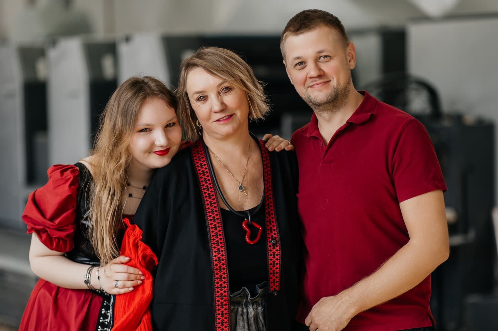
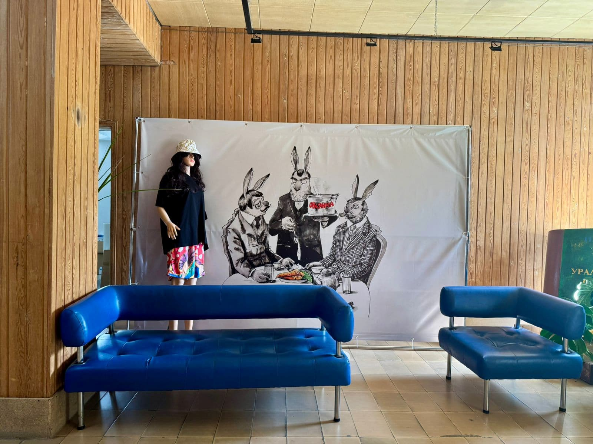

Арт-салон, приуроченный к дню рождения типографии «Лазурь»

30 апреля 2026 года типография «Лазурь» отметила своё 29-летие необычным событием — первым Арт-салоном. На один день наше предприятие превратилось в пространство, где печатное дело встретилось с чистым искусством.
Выставки, мастер-классы, живая музыка, показ мод и тёплое общение — рассказываем, как это было, и благодарим всех, кто помог этому дню случиться.
Встреча гостей
Гостей встречали сотрудники бухгалтерии «Лазури» в образах красок, карандашей и художников — живые фигуры задавали тон с первых минут. Они провожали прибывших до фотозоны и рассказывали, что ждёт дальше.
Фотозона с картиной Анастасии Нильской стала первой точкой притяжения — здесь с удовольствием фотографировались все без исключения.

Конкурс инсталляций
Отдельные сотрудники предприятия подготовили творческие инсталляции. Каждая работа — это самостоятельное художественное высказывание, отражающее атмосферу и дух «Лазури». Конкурс показал, насколько многогранны таланты нашего коллектива.
Выставочные залы
Холл, коридоры и цеха типографии превратились в выставочные залы. На стенах разместились работы художников, с которыми сотрудничает наше предприятие, и картины из нашей коллекции. Гости могли свободно перемещаться по пространству, рассматривая экспозицию.
Музей Андеграунда
Музей Андеграунда был открыт в Екатеринбурге в 2022 году Павлом Владимировичем Негановым. В музее представлено 2000 экспонатов из его личной коллекции — это самое большое собрание неофициального искусства на Урале. Коллекция Музея Андеграунда — своего рода энциклопедия советского неофициального искусства 1960−1980-х годов. Впервые на одной площадке представлен столичный и провинциальный андеграунд: от Оскара Рабина и Анатолия Зверева до уральских художников — Валерия Дьяченко, Валерия Гаврилова, Олега Елового и Б. У. Кашкина.
Экскурсию по привезённой экспозиции проводила Гущина Дарья Алексеевна — искусствовед, сотрудница музея (отдел просвещения и научный отдел). Те, кто успел послушать, остались под большим впечатлением и решили обязательно посетить музей лично.


Ирбитский музей
Ирбитский государственный музей изобразительных искусств им. В. А. Карпова — единственный в стране специализированный музей графики. Его основатель Валерий Андреевич Карпов в начале 1970-х годов приступил к реализации благородной мечты — созданию в провинциальном Ирбите музея мирового уровня.
В составе коллекции зарубежного искусства, насчитывающей более 3 600 произведений, представлены практически все крупнейшие европейские художественные школы XVI–XX веков. На выставке были представлены десять гравюр десяти известных мастеров:
- Альбрехт Дюрер — ксилография «Самсон, раздирающий пасть льву», один из ранних шедевров мастера.
- Лукас Кранах Старший — ксилография «Коронование тернием» из серии «Страсти Христовы».
- Ганс Гольбейн Младший — титульный лист книги «Городское право Фрайбурга», образец книжной иллюстрации мастера.
- Жак Калло — офорт «Ярмарка в Импрунете», виртуозная многофигурная композиция.
- Антонис ван Дейк — гравюра «Иисус со своей возлюбленной».
- Якоб Йорданс — «Какус похищает быков и коров Геркулеса» на античный сюжет.
- Рембрандт — офорт «Снятие с креста», поражающий сложностью пространственного решения и светотеневыми эффектами.
- Уильям Хогарт — гравюра «Современный ползучий разговор», сатира на великосветское английское общество.
- Джованни Батиста Пиранези — «Вид арки Тита» из серии «Виды Рима».
- Франсиско Гойя — лист № 43 «Сон разума рождает чудовищ» из знаменитого альбома офортов «Капричос».
Экскурсию по экспозиции провёл сотрудник музея. Благодаря увлекательному рассказу у гостей появился искренний интерес посетить музей лично. Впечатления — самые тёплые.
Сайт Ирбитского музея →ART-выставка WOMEN
Организатор выставки — Екатерина Бузмакова, основатель платформы «ЖАБА» (vk.ru/zhaba_hub). Миссия проекта — создавать пространство, где искусство становится личной историей каждого, где зритель знакомится не с «объектами», а с живыми авторами и их внутренними мирами.
Выставка WOMEN — это погружение в многогранную женскую природу: от нежной романтики до дерзкой силы. Восемь женских образов, объединённых в пары картин, сопровождались живым словом и арома-перформансом — четыре стиха и четыре аромата.
Художники: Teonanakatl, Van Gar, Наталья Гущина, Hasan.
Поэтический перформанс — Максим Михеев (актёр, режиссёр, поэт, сценарист, руководитель студии сценического искусства «Театр мечты», театра поэтов «Три точки»). Арома-перформанс — Алиса (искусствовед, медиатор, лектор).
Гости сопоставляли арома-полоски с разными запахами и угадывали, какой запах какой картине подходит больше, пока Максим читал стихи — монолог женского персонажа.
Мастер-классы
Все гости могли участвовать в различных мастер-классах, что с большим удовольствием и делали. Поскольку цехов на предприятии много, все мастер-классы разместились в разных помещениях — суеты и толпы не было, каждый свободно перемещался, занимался и общался. Многие пришли с детьми и внуками — и всем было чем заняться, никто не скучал.
В программе мастер-классов:
- Рисование картин — под руководством Натальи Карпенко гости создавали собственные живописные работы.
- Гончарное мастерство — мастер Алсу помогала освоить работу с глиной.
- Игра на африканских барабанах — ритмичный и зажигательный мастер-класс, собравший много желающих попробовать себя в музыке.
- Флористика — гости под присмотром мастера создавали свои букеты в красивых корзинках, которые забрали с собой.
- Рисование на кружках и спилах — возможность создать уникальный предмет своими руками и увезти памятный сувенир с Арт-салона.
Каждый нашёл занятие по душе, а результаты творчества стали приятным дополнением к впечатлениям от праздника.


Живые полотна
Идея и воплощение живых полотен — полностью силами наших сотрудников. Спасибо Агапову Владимиру Гости были в большом восторге от этого интерактивного знакомства с искусством. Место для живых полотен оборудовали в тамбуре цеха — спасибо хозяйственному отделу и лично Будунаеву А.В.
В формате видео-рассказов были представлены три художника:
- Анастасия Нильская — петербургский художник, член Союза художников Санкт-Петербурга. Потомственный живописец и иллюстратор, соорганизатор сообщества «ХВОСТ». Её серии «Зайцы», «Огурцы» и «Красная серия» — ироничный и искренний разговор о нас с вами.
- Бэнкси — самый загадочный стрит-арт-художник современности. От граффити Бристоля до самоуничтожающихся картин на Sotheby's — его работы сочетают иронию с острыми социальными высказываниями и уходят за миллионы долларов.
- Альбрехт Дюрер — гений Северного Возрождения. От знаменитых «Рук молящегося» до «Зайца» с отражением окна в зрачке — его наследие хранят три города: Вена, Нюрнберг и Ирбит.
Гости были в большом восторге от этого формата. Видео позволили не просто увидеть искусство, а погрузиться в истории художников.
Винный и шоколадный фонтаны
С самого начала мероприятия работали винный и шоколадный фонтаны, создавая атмосферу праздника и собирая гостей для непринуждённого общения.
Музыкальное сопровождение
Музыкальное сопровождение в течение всего вечера обеспечила школа искусств. Исполнители: Алферьева Анна Валерьевна и Ватутина Светлана Александровна (завучи), Трегубова Елена Георгиевна, Ундольская Надежда Николаевна, Скосырская Татьяна Викторовна. В их исполнении прозвучали классические и современные произведения, создавая особую атмосферу на протяжении всего мероприятия.
- В. Одоевский «Сентиментальный вальс»
- N. Rota «Speak Softly Love»
- Е. Дога «Вальс» из к/ф «Мой ласковый и нежный зверь»
- М. Легран «Мелодия» из к/ф «Шербургские зонтики»
- В. Киселев «Мой путь»
- L. Weber «Memory»
- Дж. Верди «Дуэт Альфреда и Виолетты» из оперы «Травиата»
- Л. Бетховен «Прощание с фортепиано»
- А. Грибоедов «Вальс»
- М. Титов «Вальс»
- Ф. Шуберт «Шесть вальсов»
- Ж. Бизе Фрагмент из оперы «Кармен»
- Ж. Бизе «Хабанера» из оперы «Кармен»
- Жилин «Полька»
- Д. Шостакович «Полька-шарманка»
- И. Штраус «Две польки»
- И. Штраус «Полька-пиццикато»
- К. Франсуа и И. Рево «Мой путь»
- А. Л. Уэббер «Память»
- Дж. Дассен «Если б не было тебя»
- Дж. Шеринг «Колыбельная»
- Ф. Лэй «Мелодия» из к/ф «История любви»
- Дж. Леннон, П. Маккартни «Yesterday»
- Ф. Шопен «Вальс» си минор
- А. Грибоедов «Вальс» ля бемоль мажор
- М. Дворжак «Этюд» тетрадь №6
- Ф. Шуберт «Ave Maria»
- Г. Пахульский «Прелюд»
- Ж. Массне «Элегия»
- Ф. Шопен «Прелюдия»
- А. Рубинштейн «Мелодия»
- Л. Бетховен «К Элизе»
- А. Рыбников Романс «Я тебя никогда не забуду» из рок-оперы «Юнона и Авось»
- Б. Кемпферт «Путники в ночи»
- С. Намин «Мы желаем счастья вам»
- D. Henley «Hotel California»
- Б. Мэй «Песня группы Queen»
Показ мод
Показ мод стал одним из центральных событий Арт-салона. Подиум изготовили своими силами — спасибо хозяйственной бригаде. Профессиональное освещение картин и подиума обеспечил Костоусов Н., главный механик предприятия. Он же выступил комментатором всего показа.
Коллекции «Лазури»
Четыре коллекции футболок, придуманные и напечатанные в «Лазури», были созданы с картин и рисунков Василий Ромашкин, Сергей Меренков, Анастасия Нильская и Сергей Уваров. Даша Деева невероятно оживила коллекцию Анастасии Нильской, сделав её самой весёлой — с интересными дизайнерскими находками.
Особая благодарность — нашим сотрудницам, помогавшим в создании головных уборов: Минеева С., Чиклина С., Подкина Е., Шарипова Л.

Коллекция Людмилы Носковой
Приглашённая коллекция — «Весна в ритме любимого города» от дизайнера одежды Людмилы Носковой. Она вдохновилась городом Реж — его ритмом, фасадами и добрыми, талантливыми людьми, а также картинами художника Евгения Гладких. Его рисунки ожили в вышивке на одежде. Идея коллекции: когда мы вместе — мы сила.
Дизайнер одежды — Людмила Носкова. Художник — Евгений Гладких. Модели — студия Александры Гладышевой.
Сумки Андрея Вяткина
В показе также участвовали вязанные женские сумки Андрея Вяткина — чемпиона Урала и России по парикмахерскому искусству 2010 года, полуфиналиста Russian Hairdressing Awards. Андрей работает в области женской моды 16 лет, а вязанные сумки создаёт более года (продано более 50 экземпляров). Основатель будущего бренда VIATKIN SECRET (vk.ru/clubvyatkin).

Модели — наши сотрудники
Моделями выступили наши сотрудники. Они месяц учились ходить правильно по подиуму — и сделали это профессионально и красиво. Все футболки, шопперы, зонты, джинсовки — придуманы и напечатаны в «Лазури».
Поздравления от партнёров
После показа прозвучали поздравления от поставщиков и партнёров. Это было приятно и трогательно — спасибо всем за тёплые слова и поддержку.
Фуршет
Фуршет стал временем непринуждённого общения и обмена впечатлениями. Ответственная за вкусное составляющее — Ларина Л. Отдельное спасибо компании-организатору обслуживания.
Гости
Большинство гостей — наши сотрудники, а также приехали партнёры, поставщики и заказчики, связанные с миром искусства. Спасибо всем, кто пришёл разделить с нами этот праздник, и особенно нашим сотрудникам, которые помогли в организации Арт-салона!
Завершение вечера — джаз
Завершил вечер джазовый коллектив из Екатеринбурга. Отличное, зажигательное исполнение джаза добавило настроения и эмоций всем гостям.
Все сотрудники пришли очень красивыми и стильными — как и подобает посетителям Арт-салона. Мероприятие получилось душевным, познавательным и красивым. Это была отличная генеральная репетиция перед юбилеем в следующем году.
Обязательно придумаем что-то не менее интересное и удивим вас. Оставайтесь с нами, наши друзья, партнёры, заказчики, коллеги!